Teaching
Taught graduate and undergraduate courses in mathematics and statistics at University of Calgary (2015–2018), Western Illinois University (2014–2015), and University of Wyoming (2009–2014). Developed flipped classroom methods and interactive teaching materials.
Courses Taught
University of Wyoming and Northern Colorado University
- Discrete and Combinatorial Mathematics (MATH 5700 - Summer 2012)
For highschool teachers
- Calculus I (Math 265 - Fall 2017)
- Linear Algebra (Math 211 - Spring 2017)
- Discrete Mathematics (Winter 2017)
- Linear Algebra (Math 211 - Fall 2016)
- Introductory Calculus (Math 249 - Spring 2016)
- Calculus I (Math 265 - Fall 2015)
- Calculus I (Math 133 - Spring 2015)
- General Elementary Statistics (Stat 171 - Spring 2015)
- Concepts of Mathematics (Math 101 - Fall 2014)
- Dr. Monfared is very helpful and I can tell he cares about his students and enjoys coming to teach. Overall he is a very good instructor.
- He is very helpful.
- He's a great teacher.
- Very helpful when you ask a question. I usually don't understand when he first explains it but I do after I ask questions about the worksheets. Readily available and open.
- General Elementary Statistics (Stat 171 - Fall 2014)
- My Instructor does a great job of teaching.
- He does very well teaching, and has the best teaching style I've seen for math. He gives plenty of handouts and explains everything clearly.
- I think overall I have a good professor. Ive went to his office hours many times and he was helpful.
- Very organized.
- Great quality teaching.
- Math usually isn't my subject, but Professor Monfared does a good job explaining everything. I really like the online homework and the worksheets we do in class together.
- I like the way of learning because he teaches, we learn then we do multiple examples together in class and once it is time to do homework online, it is somewhat a breeze.
- Clarity, encouragement, and helpfulness.
- He is a great teacher. He takes it slow enough for everyone to understand.
- Professor Monfared is well prepared and very helpful. He presents the material in a way that is easily understood, and his tests and homework are fair.
- The worksheets handed out in class are a big help.
- Overall I enjoy the class.
- He was good and knew what he was talking about.
- He is so helpful for me.
- My instructor is very helpful and if I need help he will quickly respond to my emails. He seems to want everyone in the course to do well.
- He gave worksheets to follow during class and allowed me and other to actually participate. This was very helpful and he should continue for future classes.
- Things that I did find helpful are the written homework, and his openness to questions. He just wants you to have an understanding and clear knowledge of the subject rather than just getting you through the course as quick as possible.
- The worksheets help significantly.
- Elementary Linear Algebra (MATH 2250 - Summer 2014)
- After the first week when i asked more questions I started learning more and I think it's effective. Class time was utilized efficiently to understand more what was going on.
- Keivan's teaching method was having us watch and read the class materials before we covered them in class. I liked this approach as it allowed nearly the entire class period to be open for questions.
- I felt like Keivan did a great job teaching this course. We used effective technology. I really liked the supplemental lectures from MIT. Thank You! I really enjoyed the course!
- I liked the setup of the class. Although it was a lot of work outside of class time I found the videos and worksheets helpful.
- The course has been a fantastic introduction to Linear Algebra. The book was the best textbook I have read to date. The setup of the class was the optimal way to learn the material. Thank you for an informative, and fun class.
- Keivan did a great job. The course load was quick, but maintained a pace that allowed for the full grasp of the topics while keeping the course challenging.
- Keivan was a great instructor. He was extremely helpful in class and always explained things in a clear manner. Everything was done extremely well.
- I want to say that I really enjoyed the class.
- I felt that Keivan did a great job in a short amount of time, with difficult material, and a class with very diverse experience.
- I enjoyed the format of this course in which we watched the lecture outside of class, took a quiz at the beginning of class, received a short overview of the lecture, and then worked problems in class. Working problems in class helped reinforce the material and if we had any questions, Keivan was always willing to help.
- Geometry and Measurement (MATH 2120 - Spring 2014)
For elementary school teachers - Calculus III (MATH 2210 - Fall 2013) - Discussion Leader
- Overall Keivan was extremely helpful.
- Keivan was very helpful. I went to his office hours four or five times. He helped clear up my struggles.
- Great teacher. Always provides helpful information.
- Keivan is awesome.
- Hands down the best teacher I have ever had for a class in college.
- Very helpful and very understanding of the material. One of the best, if not the best, math instructor I have ever had at UW.
- He was helpful. Knows the material and is almost always able to explain it in an easy way.
- Keivan was an excellent teacher, he was the best teacher I have had at UW thus far. He was committed to fully answering any and all questions.
- He is a very nice guy and enjoys teaching. He seems to really care about his students.
- Keivan not only understands the material extremely well, but he is very skilled at teaching the material.
- Keivan was very helpful and always answered my questions as clearly and effectively as he could. He seemed to care a lot about student success.
- Calculus III (MATH 2210 - Summer 2013)
- Professor Monfared was thoroughly effective at teaching multivariable calculus. He cares whether or not his students understand the material. Fantastic course.
- Good professor and teaching methods.
- Good explanations.
- Algebra and Trigonometry (MATH 1450 - Spring 2013)
- Mr. Monfared is an excellent instructor. He is a great value to the university and mathematics.
- Good teacher. Very approachable!
- Keivan is a great teacher. He knows how to reach to students' minds. He has many ways for explanation.
- Calculus I (MATH 2200 - Fall 2012)
- Keivan is a great teacher. He is the most interested of all my teachers in an individual's progress.
- He is a very dedicated teacher always putting in effort out of class for students.
- Always very helpful and seemed to care about the students grades.
- Keivan was an excellent teacher. He took interest in his students. He showed genuine concern. He made calculus easy to understand.
- Calculus II (MATH 2205 - Summer 2012)
- Very effective and simplistic explanations and presentation that enables all of the students to understand important concepts.
- The instructor was great! He always asked if we understood the material.
- Keivan is one of those quality teachers. Very confident in his presentation. His foreshadowing helps give meaning to what we are currently studying. His commitment and quality of lecture would help any budding-math student.
- Algebra and Trigonometry (MATH 1450 - Fall 2011)
- Elementary Linear Algebra (MATH 2250 - Summer 2011)
- Finite Mathematics (MATH 1050 - Spring 2011)
- Trigonometry (MATH 1405 - Fall 2010)
- Finite Mathematics (MATH 1050 - Summer 2010)
- College Algebra (MATH 1400 - Spring 2010)
- Trigonometry (MATH 1405 - Fall 2009)
Teaching Philosophy
And this can be achieved when learners are actively and independently engaged in a learning process, and when they can share this experience together. Traditionally, mathematics is taught as mostly lecture. In my classes I use a mix of strategies. For instance, in some of my classes I give only short lectures at the beginning of each day, or some days I do not lecture at all. Instead, students are given worksheets that include problems that are arranged from basic one-step questions to more involved computational and conceptual problems. Students form groups that they stay with for a portion of the semester, and they work on the worksheets in their groups. I attend each group and answer their questions and direct their discussions. Sometimes that I feel necessary, I give a mini lecture for the class, or solve one of the problems on the board, and then I let the group discussions continue. At the end of the day I post the solutions online, where the students can access them after they are ready for it. Often students come to me at the end of a class to tell me that they liked the time when they could get their hands dirty on a problem during the class, and usually they ask for more such opportunities. I have seen those "ahha!" moments happening in class when students ask a question from a group-mate and get responses from them, or when they discover new concepts or identify a common mistake together. Some of them have told me that they learned a topic when they taught it to a classmate. A few years ago I taught two linear algebra courses, one lecture based, and one using the method I described here. The response rate to my in-class questions in the second method was much higher, and the students overall performed better in the exams. I am currently working on how to incorporate these activities in larger classrooms.
Learners are strongly encouraged when the teacher is passionate about the subject and is respectful of the learners. A common comment that I receive from my students is that my excitement about teaching a topic made them interested in learning about it. As a result they paid more attention to it in class, asked more questions, and got actively engaged in learning as they made connections between their life or disciplines and the topic being discussed. I motivate a lot of topics in mathematics and statistics with real life applications. For example, in a linear algebra course I explain how google uses "eigenvectors" to sort the search results, or how instagram applies certain filters on images using "projections". In a statistics course, I use various games such as "plinko" to motivate topics. Often, I bring in pieces of history of mathematics and mathematicians to the discussions. I ask an open-ended question from students, and then direct them to ask more precise questions. For instance, I ask "how do you estimate the area of a potato-shaped closed curve?", and then we work together until we find better questions. Then I tell them that they would be as famous as Archimedes or even Riemann only if they were born a few hundred years ago, because they asked the same questions that they did. One of my favourite parts of teaching is getting students excited about coming up with ideas on how a lesson relates to their disciplines, how they can explain a topic to their little sibling or to their parents in a fun way, or even how to bring it up at a party. One of my challenges is to keep students motivated and active for the entire time of class. Ideally, I would love them to keep asking questions until they get to the questions that they can answer, and then work their way backwards to answer the big questions.
I constantly seek for feedback from my students. If I see them on the hallways or when we are just walking to the class, I ask them about how they feel about the course, how do they think they are performing, and what are the things that they like or do not like in the class. I also send online feedback forms to students during the semester to get an understanding of how I am doing, and often I make changes according to what the students say during the semester. One of my strategies to get an informative feedback is to explain to students the results of feedback my previous students have given. Then I report on their feedback immediately, and communicate to them how I am going to implement their suggestions. I am thinking about a sustainable way of continually getting feedback from students on a daily basis and implementing it in my classes. Also, as students need our feedback to improve, I feel I need my peers' feedback to improve. Hence, I continually seek feedback from my colleagues on my teaching. Moreover, I ask people from outside mathematics department to observe my classes so that I also see a non-mathematician's point of view on delivering methods, and not just the content.
Teaching Approach
I have taught graduate and undergraduate mathematics courses for the past eight years and I have been trying various strategies, environments, and tools to improve the learning experience for students from diverse backgrounds in various classroom settings, from online courses to small classes of 15 students and to large classes of 300+ students. Over that past few years, I have participated in various workshops and conferences to enhance my knowledge and skills set for teaching and learning.
I have participated (and I am certified) in the Instructional Skills Workshop (an internationally acclaimed instructor development program encouraging reflection and examination of one's teaching practices with feedback focused on the learning process). This workshop gave a lot of structure to my teaching practices, and added lots of tools to my teaching toolbox. After one year of practice, now I am very comfortable planning every day of my class using BOPPPS model, and aligning all parts of the class activities, homework, exam, lab activities etc with Bloom's taxonomy. Also, through this workshop and a few others, I have developed various strategies to get the most meaning out of students feedback, seek informative feedback from my colleagues, and to reflect on my own teaching strategies.
I have participated (and I am certified) in the Course Design Program (a program focusing on aligning all aspects of a course from syllabus to final exam, and from class activities to outcomes, by encouraging a backward design point of view). The program has helped me not only to completely internalize what are the goals of each course, but also to be able to better communicate such goals with students, and hence shaping their way of learning by focusing on the outcomes.
I have always been fascinated by how naturally I learn mathematics in an "experimental" setting. As a result, I always wanted to provide such a learning environment for my students. Since I started teaching I have participated in many discussions about Inquiry Based Learning including a conference by Academy of Inquiry Based Learning (AIBL), and I am a member of the community. One of the common strategies that I employ in my teaching is by asking open ended questions that target the final goal of the lesson. Then I let the students discuss their ideas and I try to direct their discussions and questions. This has proven to be very effective in cementing the core ideas of each lesson, and also encouraging students to try to discover mathematics on their own.
As I have mentioned in my teaching philosophy, I believe learning is done by doing, and flipped learning environment is best fit for this purpose. In this setting, students read part of a book, an article, or a handout at home, or watch a short video before coming to class. During the class, students start working on assignments, or problems that prepare them to learn and investigate more in depth questions. I have taught an entire linear algebra course in a flipped setting, and I use it to some extent in all courses that I teach.
To ensure that students do their pre-class activities, I prepare a short quiz for every day of class. The questions are designed so that students do not feel like they need to actually learn anything, rather simply just remember what they have seen, targeting the lowest level of Bloom's taxonomy. Sticking to this quiz on a regular basis ensures the students that they need to do their part.
I often start with a short review of what they have "learned" in their pre-class activity, usually 5-10 minutes. Then, the students are presented with a worksheet, broken into groups, and the rest of the class is spent on solving the problems. The nature of these problems build on their knowledge from the pre-class activity, slowly getting deeper into more complex conceptual situations. It is what an instructor does in class that makes all the difference, and I as an instructor, can help facilitate this learning environment which is unique, and is tailored to my students.
The students are expected to finish their work on the worksheets that they have started in class. Usually, the worksheets end up with relatively open-ended or exploratory questions that connect the current topic of the course to the one of the next day of class. Times to times I have students write reflective summaries of what they have learned and share it with me.
I have experimented a few different ways of breaking students into groups: (1) Randomized groups each day, and (2) Assigned for the whole semester. Each has its own benefits. In the first method, I shuffle a deck of playing cards and deal one card to each student, forming groups of size at most 4. Students get to work with most of their classmates and build a rather shallow trust with the whole class. In the second method, I put students in groups with a range of mathematical abilities, majors, and attitude towards group-work. They build a deep trust relationship, which sometimes end up in long-term partnership in their education.
I start each semester by sending out a form to students before classes start, asking them about who they are, what their goals are, and what keeps them up at night. Around the middle of the semester, I ask students to tell me how things are going. I collect the responses, summarize them, and report back to students with what they asked for and how I am going to change my approach. I also provide plenty of feedback to students on where they stand, how their learning is being evaluated, and what they can try to improve.
At least once a year I ask a colleague to come and observe my class. Sometimes I ask for overall feedback, other times I ask them to look for a particular aspect of my teaching such as "do I make enough eye contact?", "did I wait enough for students to respond after I asked a question?", "do I speak too fast?" etc. Many iterations of these informative feedback have helped me fine tune unconscious parts of my teaching.
Often, I use SageMath in class to help students visualize different concepts, specially in calculus and linear algebra courses. I also use it in various courses just for computations. I always share the code that I use, as well as some quick reference manuals, with students so that they can go on and experiment with it. For my first year calculus course I also make use of a resources on GeoGebra by Marc Renault.
One of the more private parts of my teaching practice is to reflect on my teaching experience every day after class. It is shockingly effective in tracking the effectiveness of methodologies, and to come up with better strategies.
An old Japanese practice in teaching mathematics is getting more and more spread throughout the west. The idea is to treat teaching like research. Plan your teaching in a way that students' learning and thinking becomes observable. Then plan a topic with some colleagues, design student activities, and invite your colleagues to observe your class. The observers will record how students did (not) learn/think. Go back to your group with this observations and make adjustments, and repeat. It is suggested to do this at most twice a year.
Educational Sage Code
SageMath is an open source math software that allows you to do various types of computations and visualizations. Below are some of the code I have used in my classes to visualize hard topics for students, or simply provide them a tool to play around with mathematical objects. The links open up in a sage cell server. You might need to hit the "Evaluate" button to see the output.
Calculus
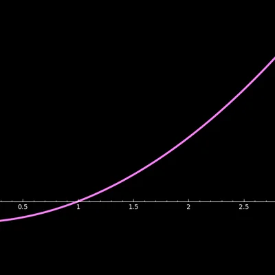
Use Newton's method to approximate a root of a function with animation.
Initial Guess: 3.0000000000000000 Next Guess: 1.6666666666666667 Next Guess: 1.1333333333333333 Next Guess: 1.0078431372549019 Next Guess: 1.0000305180437934 Next Guess: 1.0000000004656613 An estimate of the root is 1.0000000004656613
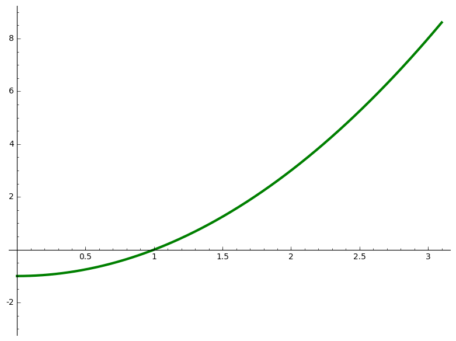
var('x')
f(x) = x^2 - 1
xmin = 0; xmax = 3.1; ymin = -3; ymax = 9
guess = 3
fprime = f.derivative(x)
g(x) = x-f(x)/fprime(x)
N = 5; Sguess = [guess]
print "Initial Guess: %20.16f"%(guess)
P = plot(f(x), (xmin,xmax), ymin=ymin, ymax=ymax, color="green", thickness=3)
Frames = [P]
for i in range(0,N):
P += plot(point((guess,0),size=20,rgbcolor=(0,0,1)))
Frames += [P]
P += line([(guess,0),(guess,f(guess))], color="gray", linestyle="dashed")
Frames += [P]
P += plot(point((guess,f(guess)),size=20,rgbcolor=(1,0,0)))
Frames += [P]
h = f(guess) + fprime(guess)*(x-guess)
P += plot(h, (xmin,xmax),ymin=ymin, ymax=ymax, color="blue")
Frames += [P]
Nguess = g(guess)
print "Next Guess: %20.16f"%(Nguess)
Sguess += [Nguess]; guess = Nguess.n(digits=15)
print "An estimate of the root is %20.16f"%(Sguess[N])
a = animate(Frames); a.show(delay=100)
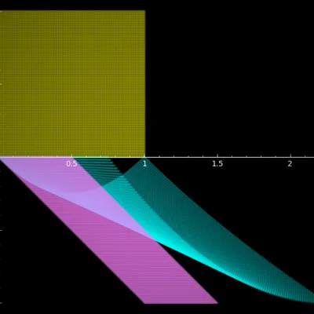
The code takes a function \(f\) that maps \(\mathbb{R}^2\) to \(\mathbb{R}^2\) and draws three regions: the unit cube in blue, the image of the unit cube under \(f\) in red, and the linearization of the image by Jacobian of \(f\) at the origin.
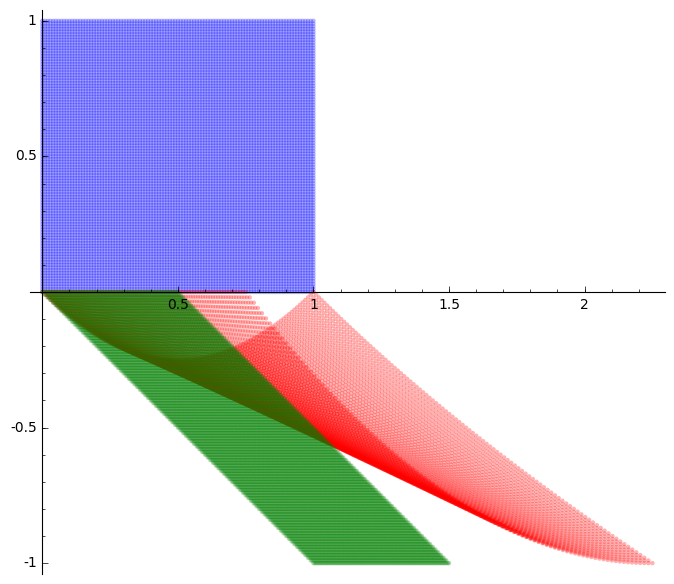
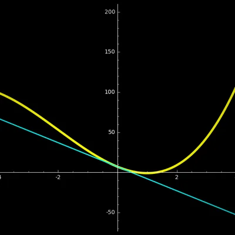
For a given function \(f(x)\) around a point \(a\), if you zoom in close enough on the graph, you can't tell the difference between the curve and the tangent line. This is the basic idea for linear approximations. Run it in sage to interact with it.
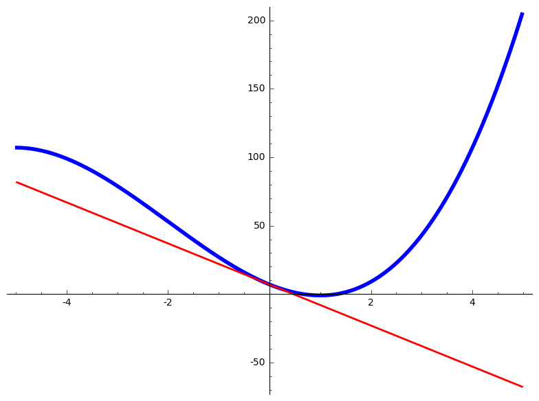
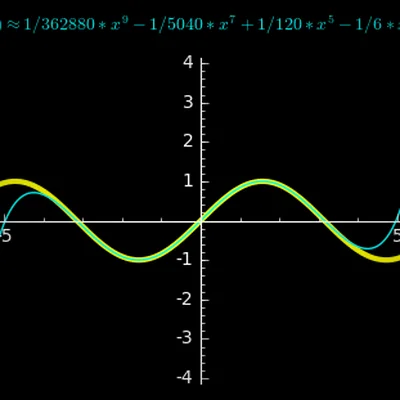
The linear approximations have errors. One way to get better approximations is by taking into account the higher order derivatives. This code will calculate and draw the n-th degree Taylor polynomial so you can compare them. Run it in sage to interact with it.
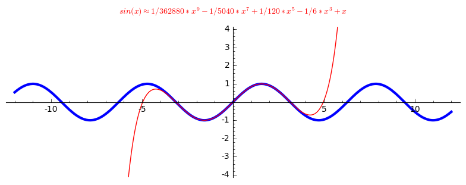
Linear Algebra
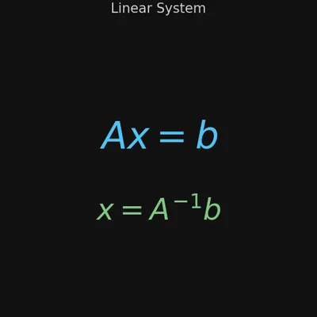
Given the coefficients matrix \(A\) and the constants \(b\) this solves the system of linear equations \(Ax=b\).
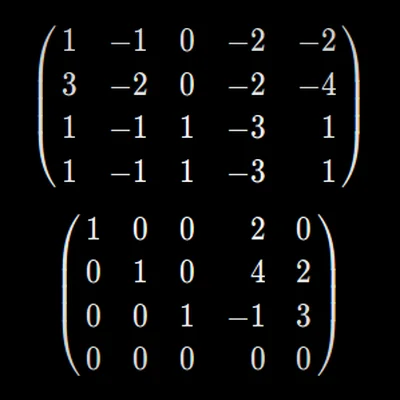
One of the problems in teaching linear algebra is coming up with a handful of examples of matrices that can 'nicely' be row-reduced. This code generates random matrices with integer entries whose reduced row echelon form will also have integer entries.
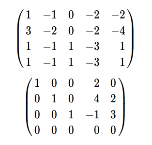
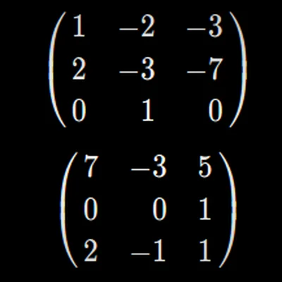
For a matrix \(A\) with integer entries to have an inverse with integer entries, it is necessary that its determinant is \(\pm 1\). It turns out that it is the sufficient condition too, thanks to Cramer's rule! This code generates random matrices with integer entries where their inverses also have integer entries.
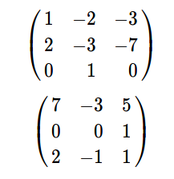
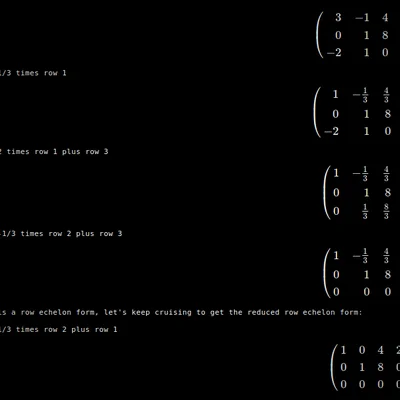
Does step-by-step Gauss-Jordan elimination process, and actually tells you what to do in each step.
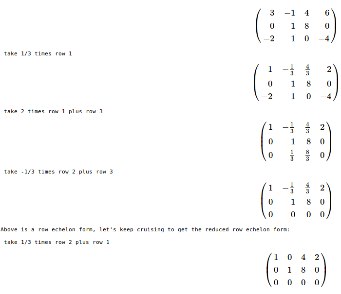
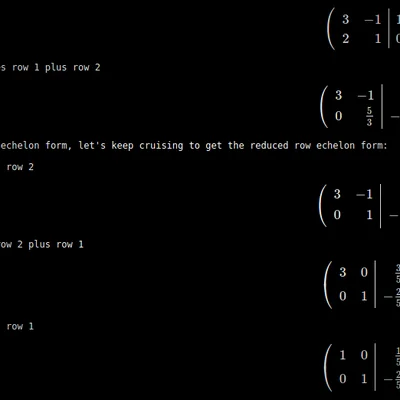
Inverts a matrix step-by-step by doing Gauss-Jordan elimination on the matrix augmented with the identity of the same size, and actually tells you what to do in each step.
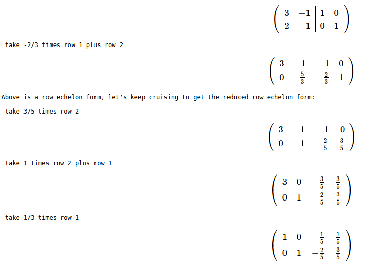
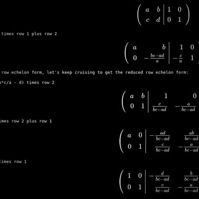
Inverts a generic \(2\times 2\) matrix step-by-step by doing Gauss-Jordan elimination on the matrix augmented with the identity. You can do the same on a \(3\times 3\) or larger matrix by doing a similar process.
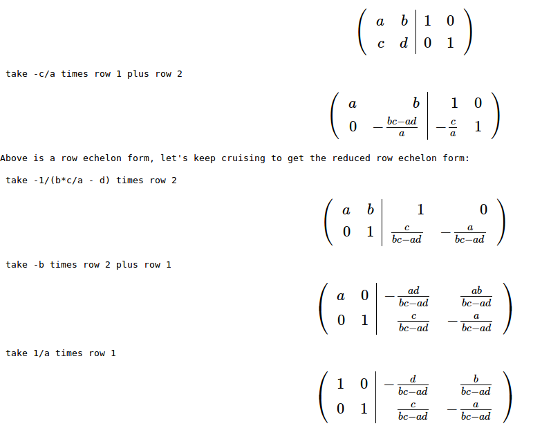
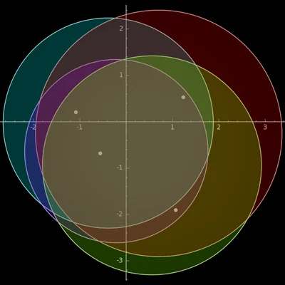
Gershgorin circle theorem roughly states that the eigenvalues of an \(n \times n\) matrix lie inside \(n\) circles where \(i\)-th circle is centred at \(A_{i,i}\) and its radius is the sum of the absolute values of the off-diagonal entries of the \(i\)-th row of \(A\). This Sage code draws the circles for a given matrix.
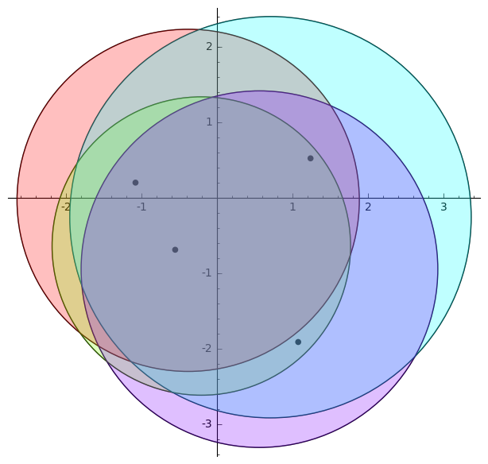
Other
Outreach Talks
Code
Sample Teaching Materials
- Calculus I: An introductory lecture based course.
- Calculus III: A higher level lecture based course.
- Linear Algebra: An introductory flipped course.
- Statistics: An introductory interactive course.